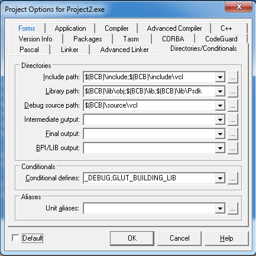

Установка GLUT под Borland C++ Builder 6
Из архива файлы следует положить в следующем порядке: glut32.dll в WindowsRoot\system32, glut.h в $(BCB)\include\gl и glut32.lib в $(BCB)\lib.
В опциях проекта (Project-Options-Directories/Conditionals), использующего GLUT, в Library path должна быть указана папка $(BCB)\lib и $(BCB)\lib\Psdk(в некоторых случаях), а в Include path – папка $(BCB)\include. В поле Conditional defines добавить ;GLUT_BUILDING_LIB
Если появляются ошибки, попробуйте добавить #pragma comment (lib, "glut32.lib").
Внимание: при каждом новом проекте повторять изменение его свойств
Урок 01 - Создание окна
Необходимые знания - геометрия пространства, базовые понятия графических примитивов - точка, ребро, пиксель, плоскость, полигон или фейс и т.д. и т.п. OpenGl является основным 3D набором инструментов разработчика, который пишет продвинутые графические приложения для работы с 3D графикой, разрабатывает игры под MacOS или Линукс ( напомню, что под Windows есть свой API - DirectX, тоже богатый на возможности, но поддержка OpenGl в ней также реализована).
В этом разделе мы собираемся создать функцию main нашей программы. Функция main будет состоять из необходимой инициализации и цикл обработки событий.
Первый блок функции main будет инициализировать процедуры GLUT и создаст окно.
После GLUT входит в цикл обработки событий, получив контроль над приложением. GLUT будет ждать каждое следующее событие, проверяя, есть ли функция для его обработки.
Поэтому, прежде чем GLUT вступит в цикл обработки событий мы должны инициализировать те функции GLUT, которые мы хотим вызвать для обработки вызываемых событий.
Каждый раз для вызова функции GLUT, её (функцию) - нужно зарегистрировать.
Создаём консольное приложение с помощью File-New-Other-Console Wizard

File->New->Other
Настройка консольного приложения

Настройки проекта
int main(int argc, char **argv)
{
// инициализация GLUT and создание окна
// регистрация вызовов функций GLUT
// цикл обработки событий
}
Инициализация GLUT и создание окна
Все функции инициализации в glut начинаются с glutInit. Первое, что вы должны сделать, это вызвать функцию glutInit.
void glutInit(int *argc, char **argv);
Параметры:
* int argc - количество аргументов
* char** argv - их описание в виде указателя на строку
void glutInitWindowPosition(int x, int y);
Параметры:
х - число пикселей от левой части экрана.
у - количество пикселей от верхней части экрана.
Далее мы выбираем размер окна. Для этого мы используем функцию glutInitWindowSize.
void glutInitWindowSize(int width, int height);
Параметры:
width - ширина окна;
height - высота окна;
Затем вы должны определить режим отображения с помощью функции glutInitDisplayMode.
void glutInitDisplayMode(unsigned int mode);
Параметры:
mode - определяет режим отображения;
Вы можете использовать режим , чтобы определить цвет, а также количество и тип буферов.
Предопределенные константы для определения цвета модели являются:
GLUT_RGBA или GLUT_RGB - выбирает окно RGBA.
GLUT_INDEX - выбирает режим индексированного цвета.
Режим отображения также позволяет выбрать одно-или двухместные окна буфера. Предопределенные константы для этого являются:
GLUT_SINGLE - режим одинарной буферизации.
GLUT_DOUBLE - режим двойной буферизации, - РЕЖИМ, ПОДХОДЯЩИЙ ДЛЯ АНИМАЦИИ.
Также существуют специализированные режимы буфера:
GLUT_ACCUM - буфер накопления.
GLUT_STENCIL - буфер трафарета.
GLUT_DEPTH -буфер глубины.
Итак, предположим, вы хотите создать окно в цветовом пространстве RGB , с двойной буферизацией, с использованием буфера глубины. Все, что вам нужно сделать, это прописать соответствующие константы для того, чтобы создать необходимый режим.
glutInitDisplayMode(GLUT_RGB | GLUT_DOUBLE | GLUT_DEPTH);
После этих шагов, окно может быть создано с помощью glutCreateWindow.
int glutCreateWindow(char *title);
Параметры:
title - имя создаваемого окна;
Итоговый код:
#include
#pragma comment (lib, "glut32.lib")
int main(int argc, char **argv) {
// Инициализация GLUT
glutInit(&argc, argv);
glutInitDisplayMode(GLUT_DEPTH | GLUT_DOUBLE | GLUT_RGBA);
glutInitWindowPosition(100,100);
glutInitWindowSize(400,400);
glutCreateWindow("Урок 1");
return 1;
}
Функции рисования и регистрации обратных вызовов
Если вы запустите этот код свыше, вы получите пустое черное окно консоли, без окна OpenGL. Есть две вещи, которые нужно сделать прежде всего. Во-первых, указать GLUT, какие функции отвечают за визуализацию. Давайте создадим пример функции для рисования. Функции представлены ниже очищают буфер цвета и рисуют треугольник.
void renderScene(void) {
Название этой функции задаётся программистом. Однако теперь вы должны сказать GLUT что он должен использовать функции, которую мы только что написали для рисования. Это называется регистрации обратного вызова. GLUT будет вызывать функцию всякий раз, когда вы выберете её для рендеринга( отрисовнки ).
Так что давайте говорить GLUT, что функция renderScene должны использоваться всякий раз, когда окно требуется окрасить. GLUT имеет функцию, которая принимает в качестве параметра имя функции для использования при необходимости перерисовки.
glClear(GL_COLOR_BUFFER_BIT | GL_DEPTH_BUFFER_BIT);
glBegin(GL_TRIANGLES);
glVertex3f(-0.5,-0.5,0.0);
glVertex3f(0.0,0.5,0.0);
glVertex3f(0.5,-0.5,0.0);
glEnd();
}
void glutDisplayFunc(void (*funcName)(void));
Пропись главного цикла программы. Бесконечный цикл, отрабатывающий все функции событий, зарегестрированные программистом.
void glutMainLoop(void);//главный цикл
Итоговый текст программы выглядит вот так:
#include
#pragma comment (lib, "glut32.lib")
void renderScene(void) {
glClear(GL_COLOR_BUFFER_BIT | GL_DEPTH_BUFFER_BIT);
glBegin(GL_TRIANGLES);
glVertex3f(-0.5,-0.5,0.0);
glVertex3f(0.0,0.5,0.0);
glVertex3f(0.5,-0.5,0.0);
glEnd();
}
int main(int argc, char **argv) {
// инициализация
glutInit(&argc, argv);
glutInitDisplayMode(GLUT_DEPTH | GLUT_DOUBLE | GLUT_RGBA);
glutInitWindowPosition(100,100);
glutInitWindowSize(400,400);
glutCreateWindow("Урок 1");
// регистрация обратных вызовов
glutDisplayFunc(renderScene);
// Основной цикл GLUT
glutMainLoop();
return 1;
}